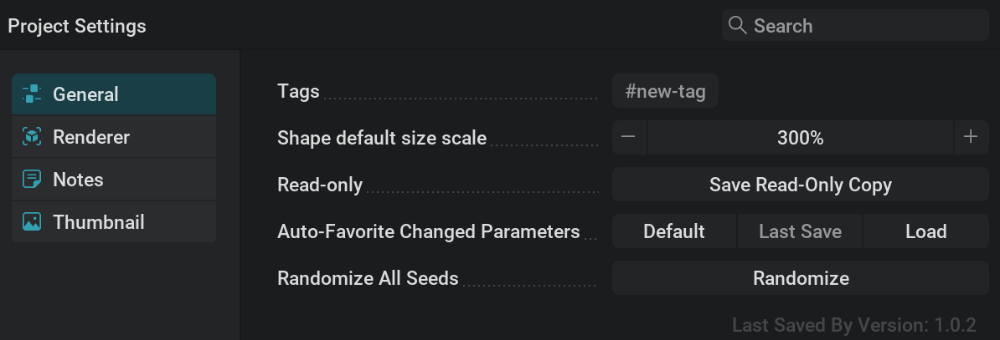
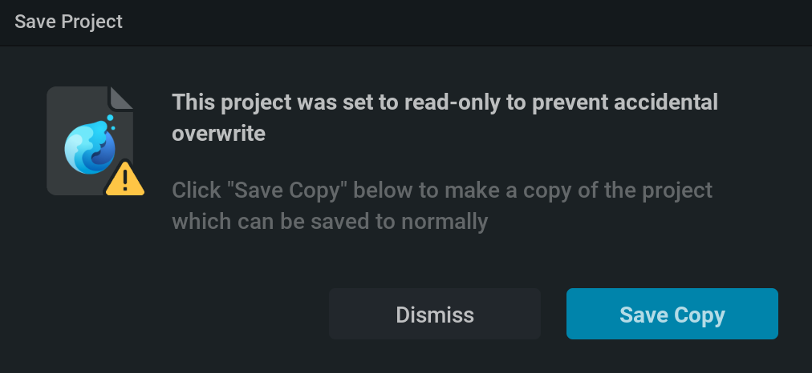
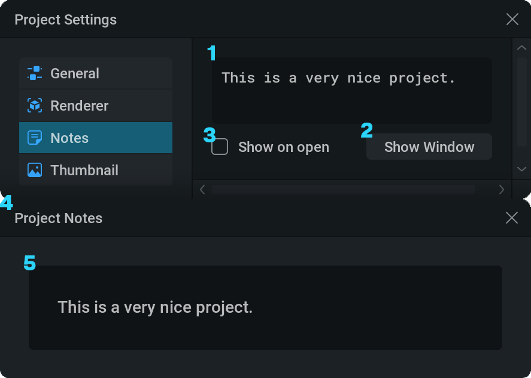
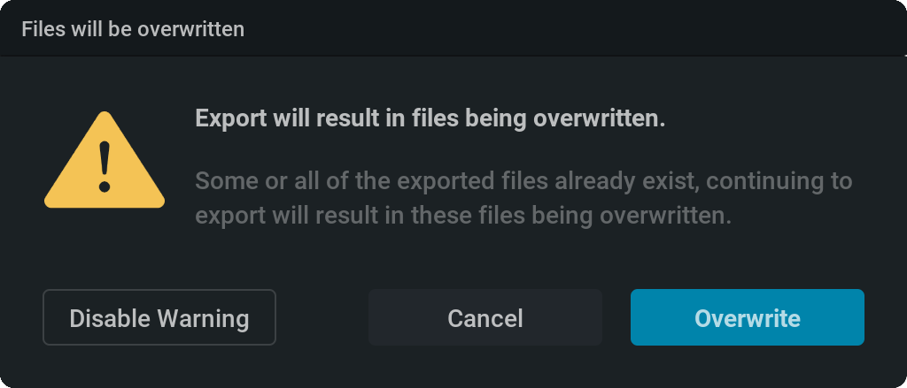
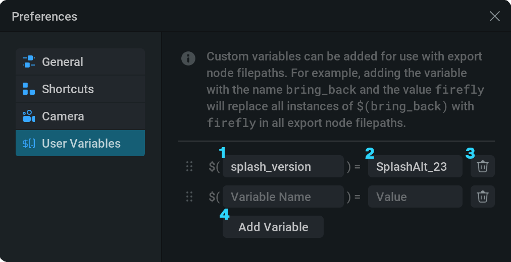

Settings#
Project Settings#
 General#
General#

Tags These tags can be used for browsing presets in the presets section of the
 project manager. (presets are .ember files stored in the presets folder in your install directory) You can use the following tags:
project manager. (presets are .ember files stored in the presets folder in your install directory) You can use the following tags: 8 GB,24 GBShape default size scale: Scaling applied to a new shape’s default size when a new shape node is created. This setting is useful for ensuring newly created shapes are a more appropriate size, for instance, if they consistently appear too large or too small by default.
Read-Only: The Save Read-Only Copy button will open a file browser to specify the name and location of where you want to save your project as a read-only copy.
This project file will function as a normal project file but when trying to save it you’ll be prompted with this message.
{kind=link}

Auto-Favorite Changed Parameters: This will favorite all parameters that are changed compared to either the last time you saved your file, the default preset, or another project file which you can browse for using the Load button.
This can be helpful for quickly getting a list of the most important parameters of your project!
Randomize All Seeds The Randomize button will randomize all parameters with
 Randomize Override enabled (by default all Seed parameters). This will give a different variation of your project. For more information about randomization check our Randomization section!
Randomize Override enabled (by default all Seed parameters). This will give a different variation of your project. For more information about randomization check our Randomization section!
Renderer#
{kind=link}

Enable or disable the visibility of certain elements of your project in the viewport. Most of these mirror the display options in the  View dropdown menu in the viewport.
View dropdown menu in the viewport.
Reset To Defaults: Prompts a window to ask you if you want to reset the project settings.
{kind=link}
Confirm will reset all the project settings to default.
Notes#
{kind=link}
{kind=link}

Textfield for typing your note.
This will open the note window (4)
With this checked, the note window will show when opening the project file you’ve set the note in.
Project Notes window
Note text.
 Thumbnail#
Thumbnail#
A thumbnail is an image or video to show with the preset in the  Home Screen.
Home Screen.

The videos have to be PNG flipbooks with a maximum size of 4009 pixels in both dimentions.
for more information about flipbooks, please check out our Export section.
When displayed on the Home Screen, a crossfade will be automatically added to the looping point of the thumbnail unless the flipbook is shorter than 41 frames.
Preview Preview of the thumbnail if you have one. You can
 click on the
click on the  and select Clear in the prompt to remove the current thumbnail.
and select Clear in the prompt to remove the current thumbnail.Capture From Viewport Capture your current viewport as a still image to be used as a thumbnail.
Import File When clicking the Import button, a file browser will pop up where you can look for a png file to be used as a flipbook or static image for the thumbnail.
Columns / Rows Here you can setup the amount of columns and rows for your flipbook. The maximum number of frames is defined by multiplying these two numbers.
If columns and rows are set to 1, you will be using a static png as your thumbnail and the following parameters won’t appear.
Frame Count The amount of frames used for the thumbnail.
Frame Rate The number of frames per second used to play the thumbnail. Higher values will “speed up” the video.
Preferences#
General#

UI Scale: Set a scale for all the text and icons in the UI. This can be helpful when you have trouble reading small letters.
Vsync: Synchronise the UI framerate to the refresh rate of your monitor.
Simulation Preemption: Time spent on a simulation step before pausing to render and update the UI. Lower values can make the UI more responsive at the cost of simulation speed.
Play Project On Load: If checked, presets will start simulating when opened. Otherwise, presets stay pauses until started.
Export Warning On Overwrite: If checked, a warning will pop up when trying to export something that would overwrite something else. for example, if you try to export a flipbook with the same name, extention, and target directory as an already existing flipbook. Disable Warning will uncheck this parameter, Cancel will cancel the export so that no files will be overwritten, and Overwrite will continue the export overwriting the files.
{kind=link}

UI Layout Set the layout of the four main panels. This can be useful to quickly reset your layout to the default if you made a lot of changes by moving and scaling these windows.
Graph Background Grid Type: Set the background grid type of the node graph. None is the best option for streaming or recording due to compression artifacts.
Mouse Compatibility Mode: If checked, the hiding and warping of the cursor when interacting with the viewport is disabled. This can be useful with remote desktop.
Middle-Click Emulation: If checked, alt +
is remapped to represent  this can be useful when working on a trackpad.
this can be useful when working on a trackpad.Scroll-Wheel Emulation: Causes
+ clicking and dragging to act as scroll events when using a tablet like a wacom. This enables you to zoom in and out in the node graph in a similar way to Nuke.Max Undo History: Amount of actions you can roll back using the undo command.
Recovery Autosave Interval: Amount of time that goes by before creating a new recovery autosave file.
FPS Limit: Maximum framerate for the simulation. This can be useful to set if you want to watch your simulation at your target framerate while working.
Show Floating Viewport: With this checked, you’ll have a floating viewport window when using fullscreen mode
 on another panel.
on another panel.Create Key When Parameter Exposed: If checked, when settings a parameter to timeline animation, a key will be created with the current value at the current frame.
Show Modulator Output On Timeline: If checked, a preview of the modulator is shown in the timeline. For example, when using a Mod: Oscillator node with a Sine waveform, you can now clearly see how the peaks and valleys relate to the timeline.
Manipulator scale: Scale the Move , Rotate or Scale manipulators in the viewport.
Template Project: Here you can set a custom default project. This project will then be used with File>New Project This project can’t be accidentally saved over since when saving the default project it will act as if it doesn’t have a file name yet and prompt you to specify one.
Post-Export Command: For example, When running an export overnight, you may want to close embergen when the export is finished to save power. This can be done by typing
$quitin this text field.- Relative Asset Paths:
If checked, all files imported into LiquiGen using the file browser will refer to a file path relative to the .liquigen project file you are working in. Navigating up folders using the
..\syntax and navigating down using/and the folder names. This can be useful if your workflow keeps your assets and project files close together in a folder structure, as it will give more clarity in the Filepath parameters and the references will not break when moving all the files together to a different folder or even a different drive.If unchecked, all files imported into LiquiGen using the file browser will refer to its absolute file path on your computer. This can be useful to keep track of where your files are.
MIDI support: This needs to be checked to be able to use the MIDI node.
Show Minimap: Toggles the minimap in the nodegraph.
Minimap Location: Dropdown menu where you can pick the desired location for the minimap in the nodegraph.
Minimap Scale: Controls the size of the minimap ranging between 40% and 200%.
{kind=link}
{kind=link}
{kind=link}
Shortcuts#
{kind=link}

 Camera#
Camera#

Bindings#
This section sets up the keybindings for moving the camera.
Camera bindings are set up in the same way as in the Shortcuts tab. But here, any combination of multiple keys and mouse buttons is accepted.
Control Mapping: Dropdown menu of different control mapping types. This is useful when you are used to another type of camera control like Blender or Maya (Industry Compatible). These can be thought of as presets for the bindings tab. Changing a control mapping will override the key mappings.
Orbit: Orbit around the pivot.
Zoom: Move the camera closer or further from your pivot.
Pan: Moves the camera horizontally and vertically in screen space (by default).
Pan (Alt.): Moves the camera over an alternative plane. This can be set up in the Pan (alt) section.
Fly: Key binding used to activate fly mode. Fly mode allows you to move around in a first person type fashion using the W, A, S, D keys or the arrow keys to move around and the E and Q keys to move up and down.
Tank: Key binding used to activate tank mode. Tank mode allows you to turn the camera left/right, and forwards/backwards with the mouse.
Pivot#
Pivot To Cursor: When enabled, zooming and orbiting will move around the pivot position instead of the camera center. The pivot is indicated with a blue crosshair and is set at the position of your cursor. This can be useful to, for example, easily zoom into or orbit around a specific droplet.
When the cursor is hovering over the sky or ground the pivot will fallback to the camera center.
{kind=link}
- Pivot To Ground: Specifies how the pivot behaves when the cursor is on the ground.
Never: The default behavior is applied using the camera center as the pivot.
Zoom only: When zooming, the camera will move towards the pivot where the cursor was placed on the ground.
Zoom and Orbit: The camera will zoom towards and orbit around the pivot where the cursor was placed on the ground.
Always Show Pivot: If checked, the blue crosshair representing the pivot is always shown even when not interacting with the camera.
Orbit#
Orbit Sensitivity: Speed of orbiting the camera in degrees per pixel. So with a value of 0.4 the camera will orbit 0.4 degrees when moving the cursor one pixel.
Invert Vertical Orbit Direction: Inverts the vertical axis of the cursor input. With this enabled, moving the cursor up will orbit down and vice versa.
Zoom#
Zoom Input Axis: Specify if the camera will zoom based on moving the cursor horizontally or vertically.
Invert Zoom Direction: If Mouse is checked, moving the cursor to the right or up will zoom out instead of in. If Wheel is checked, scrolling up will zoom out instead of in.
Pan#
Pan Sensitivity: The sensitivity of panning. Higher values will give faster panning with less cursor movement. This is shared across both regular and alternative panning modes.
Distance to Pivot Scaling: When enabled, the sensitivity of panning will be proportional to the camera’s distance from the last pivot point. This usually makes the panning speed more comfortable when being zoomed in or zoomed out a lot.
Pan Plane: The screenspace-relative plane where the mouse will pan.
Pan (alt)#
Pan Plane: The screenspace-relative plane where the mouse will pan.
Fly#
Fly Sensitivity: Higher values increase the fly speed and allow you to move around quicker. Lower values decrease the fly speed and allow you to make more precise camera movements.
Distance to Pivot Scaling: When enabled, the sensitivity of flying will be proportional to the camera’s distance from the last pivot point. This will make the fly speed seem more uniform between being zoomed in and zoomed out of a subject.
WASD Fly Plane: The screenspace-relative plane where the camera will fly over using the W, A, S, D or arrow keys
User Variables#
{kind=link}
Custom variables can be used in export node file paths to improve your workflow.
For example, if you have a lot of export nodes for separate capture types and you want to change something in the filename for all of them. If all the filenames have a user variable you can just change its value here to change it in all the filenames instead of doing it one by one.

Variable name.
Variable value.
- Remove variable.
Add a new variable.